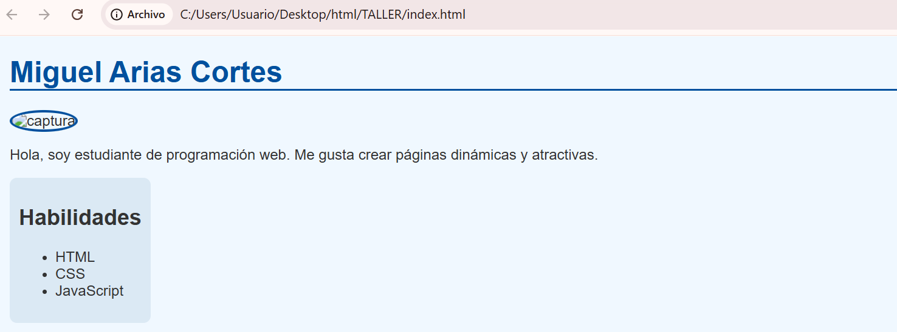

Mi Hoja de Vida
Estudiante de Aguadas
Hago constar que la información aquí consignada es verídica y puede ser comprobada por cualquier persona.
© Derechos de autor reservados.
Corrección de errores en fragmentos HTML y CSS
<h1>Mi nombre</h1>
<p>Este es un párrafo</p>
<img src="imagen.jpg" alt="Descripción" />
colr: blue; /* debe ser color: blue; */
font sixe: 16px; /* debe ser font-size: 16px; */
Quiz Creativo
1. ¿Cuál es la diferencia entre <ul> y <ol>?
Ul crea una lista desordenada (con viñetas) y ol crea una lista ordenada (numerada).
2. ¿Qué hace la propiedad border-radius en CSS?
Redondea las esquinas de un elemento.
3. ¿Qué propiedad de CSS cambia el color de fondo?
background-color
4. ¿Cómo se escribe un comentario en HTML?
<!-- Este es un comentario -->
5. ¿Cuál es la función de la etiqueta <header>?
Define la cabecera o encabezado de una sección o página.
6. ¿Qué propiedad CSS se usa para centrar un texto?
text-align: center;
7. ¿Cuál es la diferencia entre id y class en CSS?
El id es único para un elemento y class puede aplicarse a varios elementos.
8. ¿Qué significa la etiqueta <footer>?
Define el pie de página de una sección o página.
9. ¿Qué etiqueta se usa para insertar una imagen en HTML?
<img>
10. ¿Cuál es la etiqueta correcta para un párrafo?
<p>
11. ¿Cómo se crea una lista ordenada?
Usando <ol> y sus elementos <li>.
12. ¿Qué atributo se usa para enlazar una hoja de estilos CSS en HTML?
<link rel="stylesheet" href="estilos.css">
13. ¿Qué propiedad de CSS se usa para cambiar el color del texto?
color
14. ¿Cómo se centra un texto en CSS?
text-align: center;
Mi Página Personal
Tu Nombre Aquí

Hola, soy estudiante de programación web. Me gusta crear páginas dinámicas y atractivas.
Reflexión
Escribir el código fue más fácil que imaginar el diseño, porque el diseño depende mucho de la creatividad y visualización.
Me imagino esta página funcionando bien en un navegador real, mostrando el contenido ordenado, con la imagen destacada y fácil de leer.